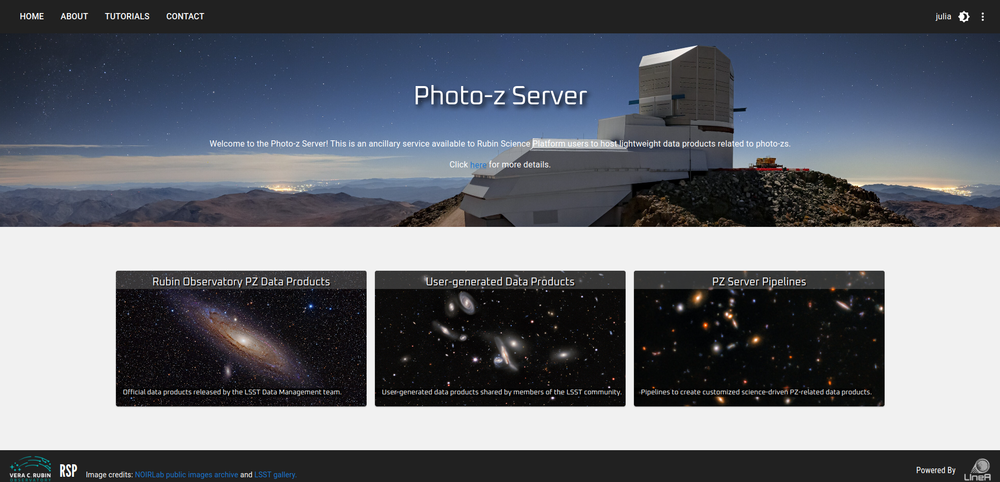
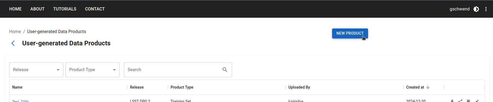
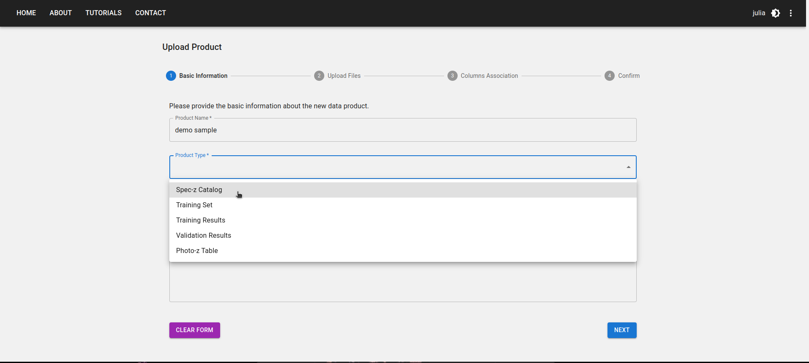
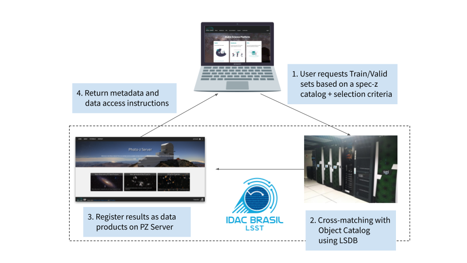
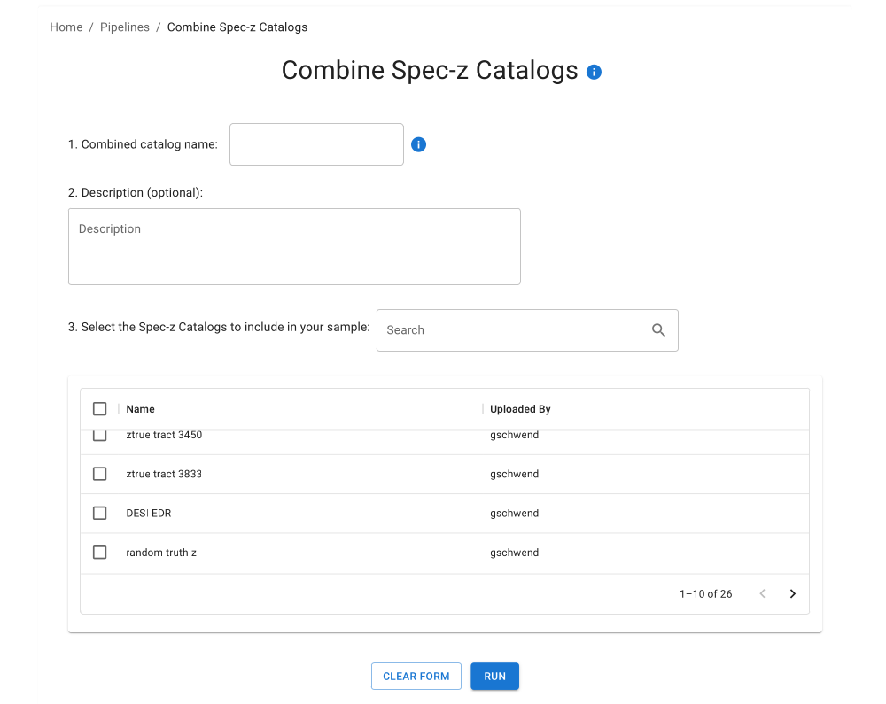
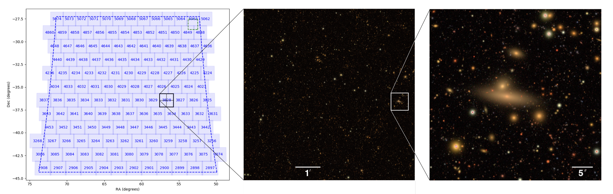
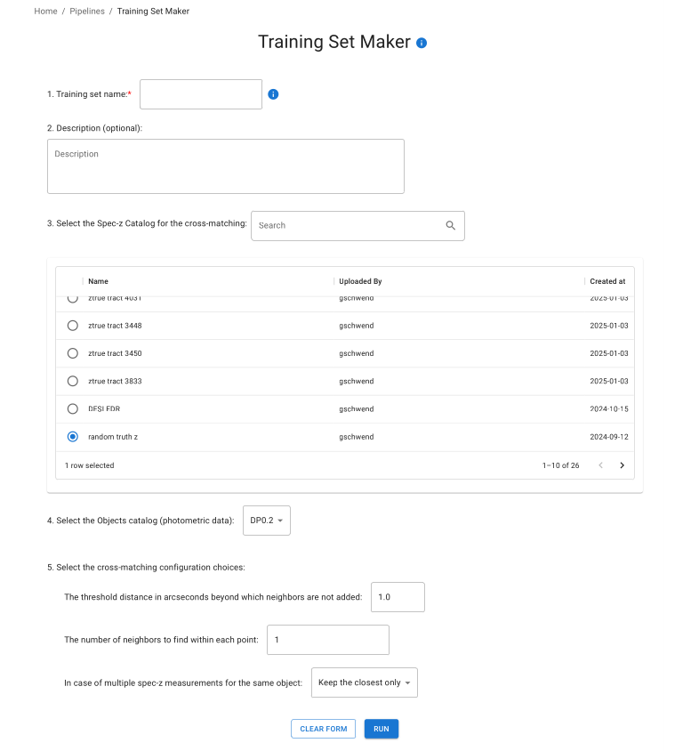

Photo-z Server Tutorial Notebook
Contact author: Julia Gschwend Last verified run: 2025-Jan-07
Notebook contents
The PZ Server website

About the PZ Server
The Photo-z (PZ) Server is an online service for the LSST Community to host and share lightweight PZ-related data products. The upload and download of data and metadata can be done at the website pz-server.linea.org.br\(^{\dagger}\). There, you will find two pages containing a list of data products each: one for official data products distributed by Rubin Observatory’s Data Management department and the other for user-generated data products.
The PZ Server is developed and delivered by LIneA as part of the in-kind contribution program BRA-LIN to the Rubin Observatory. The service is hosted in the Brazilian IDAC, with access authorized to the LSST Community through Rubin Science Platform (RSP) login credentials. For more information about other contributions from BRA-LIN, please visit the PZ Server’s documentation page.
\(^{\dagger}\) During the development phase, a test environment is available at pz-server-dev.linea.org.br.
How to upload a data product on the PZ Server website
To upload a data product, click the button NEW PRODUCT on the top left of the User-generated Data Products page

and fill in the Upload Form with relevant metadata.

How to download a data product from the PZ Server website
To download a data product available on the Photo-z Server, go to one of the two data products’ pages. The download button is on the right side of each data product. Also, there are buttons to share, remove, and edit data products.
The pzserver Python library
The pzserver Python library is a convenient tool for accessing the PZ Server’s data products and metadata programmatically from anywhere, including the Notebook Aspect of RSP.
Installation
The PZ Server Python library is avalialble on pip as pzserver.
$ pip install pzserver
[ ]:
! pip install pzserver==0.2.7
OBS: Depending on your Jupyter Notebook/Lab version, you might need to restart the kernel to incorporate the new library.
Imports and Setup
[ ]:
from pzserver import PzServer
import matplotlib.pyplot as plt
%reload_ext autoreload
%autoreload 2
A class PzServer object connects with the PZ Server back-end. To get authorization to define an instance of PzServer, users must provide an API Token generated in the menu at the top right corner of the PZ Server website.


Uncomment the next cell and paste the API Token, replacing the placeholder below:
[1]:
#pz_server = PzServer(token="<your token here>", host="pz-dev")
For convenience, the API token can be saved in a text file, e.g., token.txt (already listed in the .gitignore file in this repository).
API tokens can be reused indefinitely. However, an old token automatically expires whenever you create a new one.
DISCLAIMER: API tokens MUST NOT BE SHARED! Users are responsible for keeping their tokens private.
[ ]:
#with open('token.txt', 'r') as file:
# token = file.read()
#pz_server = PzServer(token=token, host='pz-dev') # 'pz-dev' is the temporary host during the test phase, then it will be just 'pz'
How to get general info from PZ Server
The object pz_server created above can provide access to data and metadata stored in the PZ Server. It also brings additional methods for users to navigate through the available content. The methods with the prefix get_ return the result of a query on the PZ Server database as a Python dictionary and are most useful to be used programmatically (see details on the API documentation page). Alternatively, those with the prefix
display_ show the results as a styled Pandas DataFrames, optimized for Jupyter Notebook (note: column names might change in the display version).
For instance,
display the list of product types supported with a short description,
[ ]:
pz_server.display_product_types()
display the list of data releases available at the time,
[ ]:
pz_server.display_releases()
and display all available data products.
WARNING: This list can rapidly grow during the survey’s operation (cell output scrolling recommended)
[ ]:
pz_server.display_products_list()
The information about product type, users, and releases shown above can be used to filter the data products of interest for your search. For that, the method list_products receives as an argument a dictionary mapping the product’s attributes to their values.
[ ]:
pz_server.display_products_list(filters={"release": "DP0.2",
"product_type": "Training Set"})
It also works if we type a string pattern that is part of the value. For instance, just “DP0” instead of “DP0.2”:
[ ]:
pz_server.display_products_list(filters={"release": "DP0"})
It also allows the search for multiple strings by adding the suffix __or (two underscores + “or”) to the search key. For instance, to get spec-z catalogs and training sets in the same search (notice that filtering is not case-sensitive):
[ ]:
pz_server.display_products_list(filters={"product_type__or": ["Spec-z Catalog", "training set"]})
To fetch the results of a search and attribute to a variable, just change the prefix display_ by get_, like this:
[ ]:
search_results = pz_server.get_products_list(filters={"product_type": "training results"})
search_results
How to upload a data product to via Python API (alternative method)
As shown above, the default method to upload a data product to the PZ Server is the upload form on the PZ Server website. Alternatively, the pzserver Python library can send data products to the host service.
First, prepare a dictionary with the relevant information about your data product:
[ ]:
data_to_upload = {
"name":"example upload via lib",
"product_type": "specz_catalog", # Product type
"release": None, # LSST release, use None if not LSST data
"main_file": "upload_example.csv", # full path
"auxiliary_files": ["upload_example.html", "upload_example.ipynb"] # full path
}
[ ]:
upload = pz_server.upload(**data_to_upload)
[ ]:
product_id = upload.product_id
product_id
How to display the metadata of a data product
The metadata of a given data product is the information the user provides on the upload form. This information is attached to the data product contents and is available for consulting on the PZ Server page or using this Python API (pzserver).
All data products stored on PZ Server are identified by a unique id number or a unique name, a string called internal_name, which is created automatically at the moment of the upload by concatenating the product id to the name given by its owner (replacing blank spaces by “_”, lowering cases, and removing special characters).
The PzServer’s method get_product_metadata() returns a dictionary with the attibutes stored in the PZ Server about a given data product identified by its id or internal_name. For use in a Jupyter notebook, the equivalent display_product_metadata() shows the results in a formated table.
[ ]:
pz_server.display_product_metadata(product_id)
How to download data products as .zip files
To download any data product stored in the PZ Server, use the PzServer’s method download_product informing the product’s internal_name and the path to where it will be saved (the default is the current folder). This method downloads a compressed .zip file, which contains all the files uploaded by the user, including data, ancillary files, and description files. Let’s try it with a small data product.
[ ]:
pz_server.download_product(product_id, save_in=".")
How to retrieve contents of data products (work on memory)
Instead of downloading the files, the pzserver library also allows users to retrieve the contents of a given data product to work on memory using the method get_product(). This feature is available only for tabular data (product types: Spec-z Catalog, Training Set, and Photo-z Table).
By default, the method get_product returns an object from a particular class, depending on the product’s type. The classes SpeczCatalog and TrainingSet are simple extensions of pandas.DataFrame (via class composition) with a couple of additional attributes and methods, such as the attribute metadata, and the method display_metadata(). Let’s see an example:
[ ]:
catalog = pz_server.get_product(product_id)
catalog
[ ]:
catalog.display_metadata()
The tabular data is allocated in the attribute data, a pandas.DataFrame.
[ ]:
type(catalog.data)
[ ]:
catalog.data
It preserves the useful methods from pandas.DataFrame, such as:
[ ]:
catalog.data.info()
[ ]:
catalog.data.describe()
For those who prefer working with astropy.Table or pure pandas.DataFrame, the method get_product() gives the flexibility to choose the output format (fmt="pandas" or fmt="astropy").
[ ]:
dataframe = pz_server.get_product(product_id, fmt="pandas")
print(type(dataframe))
dataframe
[ ]:
table = pz_server.get_product(product_id, fmt="astropy")
print(type(table))
table
Next, let’s explore specific features for each product type…
Data Products
Spec-z Catalog
In the context of the PZ Server, Spec-z Catalogs are defined as any catalog containing spherical equatorial coordinates and spectroscopic redshift measurements (or, analogously, true redshifts from simulations). A Spec-z Catalog can include data from a single spectroscopic survey or a combination of data from several sources. To be considered a single Spec-z Catalog, the data should be provided as a single file to PZ Server’s upload tool. Adding the survey name or identification as an extra column is recommended for multi-survey catalogs.
Mandatory columns:
Right ascension [degrees] -
floatDeclination [degrees] -
floatSpectroscopic or true redshift -
float
Recommended columns:
Spectroscopic redshift error -
floatQuality flag -
integer,float, orstringSurvey name (recommended for compilations of data from different surveys)
Let’s see an example of Spec-z Catalog:
[ ]:
gama = pz_server.get_product(14)
[ ]:
gama.display_metadata()
Display basic statistics
[ ]:
gama.data.describe()
The attribute data, which is a DataFrame preserves the plot method from Pandas.
[ ]:
gama.data.plot(x="RA", y="DEC", kind="scatter")
plt.xlabel("R.A. (degrees)")
plt.ylabel("Dec. (degrees)")
[ ]:
gama.data.hist('Z')
plt.xlabel("spec-z")
plt.ylabel("counts")
plt.title(None)
Training Sets
In the context of the PZ Server, Training Sets are defined as the product of the spatial cross-matching between a given Spec-z Catalog (single survey or compilation) and the photometric data, in this case, the LSST Objects Catalog. The PZ Server’s Training Set Maker pipeline allows users to build customized Training Sets based on the available Spec-z Catalogs (details below).
Note 1: Training sets are commonly split into two or more subsets for photo-z validation purposes. If the Training Set owner has previously defined which objects should belong to each subset (training and validation/test sets), this information must be available as an extra column in the table or as clear instructions for reproducing the subset separation in the data product description.
Note 2: The PZ Server only supports catalog-level Training Sets. Image-based Training Sets, e.g., for deep-learning algorithms, are not supported.
Mandatory column:
Spectroscopic (or true) redshift -
float
Other expected columns
Object ID from LSST Objects Catalog -
integerObservables: magnitudes (and/or colors, or fluxes) from LSST Objects Catalog -
floatObservable errors: magnitude errors (and/or color errors, or flux errors) from LSST Objects Catalog -
floatRight ascension [degrees] -
floatDeclination [degrees] -
floatQuality Flag -
integer,float, orstringSubset Flag -
integer,float, orstring
For example, the training set created in RAIL’s Goldenspike example notebook:
[ ]:
train_goldenspike = pz_server.get_product(9)
[ ]:
train_goldenspike.display_metadata()
Display basic statistics
[ ]:
train_goldenspike.data.describe()
[ ]:
train_goldenspike.data.hist('redshift', bins=20)
[ ]:
train_goldenspike.data.hist('mag_i_lsst', bins=20)
Training Results
The training results of machine learning-based PZ algorithms can also be hosted in the PZ Server to be shared and reused. This product type allows files in free format. When the training results are generated with RAIL, they are stored as pickle files and can be downloaded to the local work directory.
OBS: The method download_product always brings the data as a compressed (.zip) file, regardless of the number of auxiliary files attached to the data.
[ ]:
pz_server.download_product('197_goldenspike_flexzboost', save_in='.')
Validation Results
The PZ Server is also a good place to safely store the results of a photo-z validation procedure. Users can upload a list of files in free format, such as tabular files with photo-z estimates (single estimates and/or PDFs) of a validation set, auxiliary files with photo-z validation metrics, validation plots, etc.
[ ]:
pz_server.download_product("11_goldenspike_flexzboost", save_in=".")
Photo-z Tables
Photo-z tables are the results of a photo-z estimation procedure. If the data is larger than the file upload limit of 200MB (for instance, the PZ tables for the LSST Object catalogs delivered as part of annual data releases), the product entry stores only the metadata (and instructions on accessing the data should be provided in the description field).
PZ Server Pipelines
In addition to PZ-related data hosting and curation services, PZ Server also provides tools to help users prepare training data for PZ algorithms. The pipeline Training Set Maker uses the data partitioning method HATS and the Python framework LSDB (both developed by LINCC) as cross-matching back-end engine, coupled with a user interface on the PZ Server website plugged to the IDAC-Brazil’s high-performance computing infrastructure. With Training Set Maker, users can create training sets by matching objects from one given spec-z catalog available in the server with objects from an LSST Object catalog. In a previous step, the spec-z catalog might have been prepared as a combination of spectroscopic redshift measurements from different sources grouped into a single catalog with the pipeline Combine Spec-z Catalogs.

Both pipelines are executed as asynchronous processes triggered from the PZ Server website or directly from Python scripts using the pzserver library, and the outputs are automatically registered as new data products. See below for an example of how to use them.
Combine Spec-z Catalogs
The pipeline Combine Spec-z Catalogs (CSC) simply concatenates multiple Spec-z catalogs into a single table and registers it as a new data product on the PZ Server. It was designed to help aggregate multiple samples from individual surveys into a single catalog before they are associated with LSST data through spatial cross-matching.
On the PZ Server website, go to PZ Server Pipelines > Combine Spec-z Catalogs, fill in the submission form with relevant metadata, such as the name for the new spec-z catalog to be created and a short description, select the catalogs to include by marking at least two checkboxes, and press the Run button.

Alternatively, the pipeline can be submitted using the method pz_server.combine_specz_catalogs from the pzserver library.
Start creating a “csc” process object instance by providing a name (string) for the new spec-z catalog to the method.
[ ]:
#csc = pz_server.combine_specz_catalogs(<new product's name>)
csc = pz_server.combine_specz_catalogs("csc example")
[ ]:
type(csc)
Check status of the csc process
[ ]:
csc.check_status()
[ ]:
csc.summary()
Then, add at least two individual spec-z catalogs to be included in the sample using the append_catalog method. These catalogs must already exist in the PZ Server, and their internal names identify them. Let’s browse the spec-z catalogs available and choose from the list:
[ ]:
pz_server.display_products_list(filters={"product_type": "Spec-z Catalog", 'uploaded_by':'gschwend'})
Let’s add those six small samples extracted from DP0.2 central tracts arbitrarily selected.

Figure from: https://dp0-2.lsst.io/data-products-dp0-2/index.html
[ ]:
# csc = append_catalog(specz_id=None, internal_name=None)
csc.append_catalog(213) # tract 4029
csc.append_catalog(211) # tract 3831
csc.append_catalog(210) # tract 4031
csc.append_catalog(209) # tract 3448
csc.append_catalog(208) # tract 3450
csc.append_catalog(207) # tract 3833
When data observed with the LSST Camera become available, compilations of real data will be useful, for instance:
[ ]:
# csc.append_catalog('13_vvds_specz_subsample')
# csc.append_catalog('41_deimos_10k_public_specz')
# csc.append_catalog('42_3dhst_public_specz')
# csc.append_catalog('45_gama_public_specz')
# csc.append_catalog('51_zcosmos_public_specz')
# csc.append_catalog('52_2dflens_public_specz')
But for now, let’s stick with the mock data from DP0.2.
Let’s check the summary of csc attributes, now updated with the input catalogs added above:
[ ]:
csc.summary()
Now, use the method run to submitt the process as an asychronous job to the PZ Server’s back-end.
[ ]:
csc.run()
Still during the process, we can check the id and the internal_name of the output data product with the summary method.
[ ]:
csc.summary()
Or get it from the object csc
[ ]:
catalog_id = csc.output.get('id')
catalog_id
[ ]:
catalog_name = csc.output.get('internal_name')
catalog_name
Let’s check if the process is done, if the status is ‘Successful’, we can move on to the next cell.
[ ]:
csc.check_status()
Now, the new spec-z catalog named as “csc example” is available to be downloaded or retrieved to memory:
[ ]:
my_new_specz_catalog = pz_server.get_product(catalog_name)
[ ]:
my_new_specz_catalog.display_metadata()
[ ]:
my_new_specz_catalog.data
[ ]:
my_new_specz_catalog.data.plot(x="ra", y="dec", kind="scatter")
plt.xlabel("R.A. (degrees)")
plt.ylabel("Dec. (degrees)")
plt.tigh_layout()
Training Set Maker
Let’s add photometric data to our spectroscopic catalog to make a training set. On the PZ Server website, go to PZ Server Pipelines > Training Set Maker, fill in the submission form with relevant metadata, such as the name for the new training set to be created and a short description, select the input data and configuration parameters, and press the Run button.
The configuration parameters are inherited from LSDB. For more information, please check the LSDB documentation website.
For this pipeline, the number of inputs is fixed to two: one spec-z catalog and one LSST Object catalog (identified by the LSST data release tag).

Alternatively, the pipeline can be submitted using the pz_server.make_training_set method from the pzserver library.
While waiting for the first LSST Object catalog with observed data becoming available, let’s see how the Training Set Maker works with simulated data from DP0.2. Again, let’s instantiate an object for the process, a “tsm” object, giving a name (string) for the new training set to be created.
[ ]:
tsm = pz_server.training_set_maker("tsm example 2")
Let’s set our spec-z catalog created above as input data:
[ ]:
# tsm.set_specz(specz_id=None, internal_name=None)
tsm.set_specz(catalog_id)
[ ]:
tsm.summary()
[ ]:
pz_server.display_releases()
And the data release for the object catalog.
[ ]:
tsm.set_release(name='dp02')
[ ]:
tsm.summary()
Set the configuration parameters dict:
The dictionary “cross-matching” refers to the LSDB configuration parameters
{'n_neighbors': 1, 'radius_arcsec': 1.0, 'suffixes': ['','']};In addition, there is an extra parameter to define what to do when there are multiple matches for the same spectroscopic object: keep all matches or keep only the closest one (default). to be used by LSDB.
tsm.set_config(
{'crossmatch': {'n_neighbors': 1, 'radius_arcsec': 1.0, 'suffixes': ['_specz','']}, 'duplicate_criteria': 'closest'}
)
[ ]:
#tsm.set_config({'crossmatch': {'n_neighbors': 1, 'radius_arcsec': 1.0, 'suffixes': ['_specz','']}, 'duplicate_criteria': 'closest'})
[ ]:
tsm.summary()
This pipeline might take longer than the previous one, so letting the notebook cell run until the process is finished is convenient instead of checking the status once in a while. For that, use the method run_and_wait().
OBS: the method run_and_wait() works if the process is shorter than 30 minutes. If it takes longer, the notebook cell is released and the process switches to the asynchronous mode.
[ ]:
pz_server.run_and_wait(tsm)
[ ]:
tsm.summary()
[ ]:
training_set_id = tsm.output.get('id')
training_set_id
Now, the new training set named as “tsm example” is available to be downloaded or retrieved to memory:
[ ]:
my_new_training_set = pz_server.get_product(training_set_id)
[ ]:
my_new_training_set.display_metadata()
[ ]:
my_new_training_set.data
[ ]:
my_new_training_set.data.plot(x="coord_ra", y="coord_dec", kind="scatter")
plt.xlabel("R.A. (degrees)")
plt.ylabel("Dec. (degrees)")
plt.tight_layout()
[ ]:
my_new_training_set.data.hist('z_specz')
plt.xlabel("spec-z")
plt.ylabel("counts")
plt.title(None)
plt.tight_layout()
[ ]:
my_new_training_set.data.hist('mag_i')
plt.xlabel("i-band magnitude")
plt.ylabel("counts")
plt.title(None)
plt.tight_layout()
User feedback
Is something important missing? Send your feedback to us or open an issue in the PZ Server library repository on GitHub.